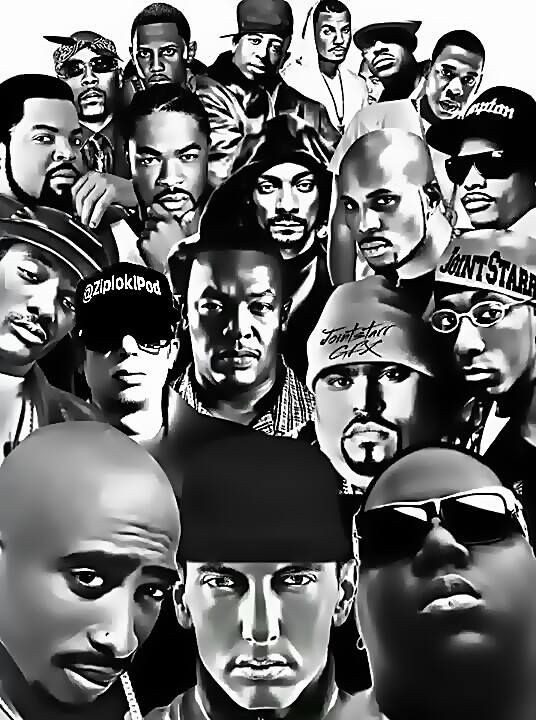

Pop

Pop music is a type of music that is typically popular to many people. This type of music is fun to listen and dance to, and these songs have catchy lyrics.
Rap
Rap music (or hip hop) is a different type of music. It requires a lot of rhythm and rhyming, and it typically includes what's on a person's mind or what they struggled with.
Classical

Classical music might not seem to exciting, but it definitely helps for concentration. It typically uses basic instruments such as the piano or violin.